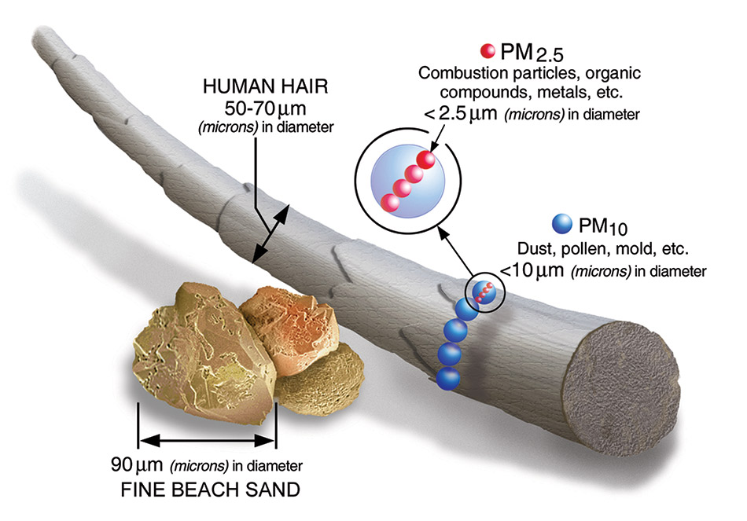

Air Pollution and Your Health
Health & Education
Environmental Health Topics
Environmental Agents
Acrylamide
Air Pollution and Your Health
Algal Blooms
Allergens
Aloe Vera
Arsenic
Bisphenol A (BPA)
Cell Phone Radio Frequency Radiation
Climate Change
Cosmetics and Your Health
Dioxins
Electric & Magnetic Fields
Endocrine Disruptors
Essential Oils
Flame Retardants
Formaldehyde
Hazardous Material/Waste
Hexavalent Chromium
Hydraulic Fracturing & Health
Indoor Air Quality
Lead
Mercury
Mold
Nanomaterials
Perfluoroalkyl and Polyfluoroalkyl Substances (PFAS)
Pesticides
Radon
Safe Water and Your Health
Smoking and Vaping
Styrene
Weather Extremes
Air pollution is a familiar environmental health hazard. We know what we’re looking at when brown haze settles over a city, exhaust billows across a busy highway, or a plume rises from a smokestack. Some air pollution is not seen, but its pungent smell alerts you.
Introduction
father holding son while looking at smoke stack
Air pollution is a familiar environmental health hazard. We know what we’re looking at when brown haze settles over a city, exhaust billows across a busy highway, or a plume rises from a smokestack. Some air pollution is not seen, but its pungent smell alerts you.
It is a major threat to global health and prosperity. Air pollution, in all forms, is responsible for more than 6.5 million deaths each year globally, a number that has increased over the past two decades.
What Is Air Pollution?
Air pollution is a mix of hazardous substances from both human-made and natural sources.
Vehicle emissions, fuel oils and natural gas to heat homes, by-products of manufacturing and power generation, particularly coal-fueled power plants, and fumes from chemical production are the primary sources of human-made air pollution.
Nature releases hazardous substances into the air, such as smoke from wildfires, which are often caused by people; ash and gases from volcanic eruptions; and gases, like methane, which are emitted from decomposing organic matter in soils.
Traffic-Related Air Pollution (TRAP), a mixture of gasses and particles, has most of the elements of human-made air pollution: ground-level ozone, various forms of carbon, nitrogen oxides, sulfur oxides, volatile organic compounds, polycyclic aromatic hydrocarbons, and fine particulate matter.
Ozone, an atmospheric gas, is often called smog when at ground level. It is created when pollutants emitted by cars, power plants, industrial boilers, refineries, and other sources chemically react in the presence of sunlight.
Noxious gases, which include carbon dioxide, carbon monoxide, nitrogen oxides (NOx), and sulfur oxides (SOx), are components of motor vehicle emissions and byproducts of industrial processes.
EPA Pollution
Image courtesy of EPA
Particulate matter (PM) is composed of chemicals such as sulfates, nitrates, carbon, or mineral dusts. Vehicle and industrial emissions from fossil fuel combustion, cigarette smoke, and burning organic matter, such as wildfires, all contain PM.
A subset of PM, fine particulate matter (PM 2.5) is 30 times thinner than a human hair. It can be inhaled deeply into lung tissue and contribute to serious health problems. PM 2.5 accounts for most health effects due to air pollution in the U.S.
Volatile organic compounds (VOC) vaporize at or near room temperature—hence, the designation volatile. They are called organic because they contain carbon. VOCs are given off by paints, cleaning supplies, pesticides, some furnishings, and even craft materials like glue. Gasoline and natural gas are major sources of VOCs, which are released during combustion.
Polycyclic aromatic hydrocarbons (PAH) are organic compounds containing carbon and hydrogen. Of more than 100 PAHs known to be widespread in the environment, 15 are listed in the Report on Carcinogens. In addition to combustion, many industrial processes, such as iron, steel, and rubber product manufacturing, as well as power generation, also produce PAHs as a by-product. PAHs are also found in particulate matter.
Air Pollution and Climate Change
Air pollution and climate change affect each other through complex interactions in the atmosphere. Air pollution is intricately linked with climate change because both problems come largely from the same sources, such as emissions from burning fossil fuels. Both are threats to people’s health and the environment worldwide. Read more: Health Impacts of Air Quality.
What is NIEHS Doing?
Over its 50-plus year history, NIEHS has been a leader in air pollution research. The institute continues to fund and conduct research into how air pollution affects health and the population groups who are most affected.
How does air pollution affect our health?
factories with plumes of smoke
When the National Ambient Air Quality Standards were established in 1970, air pollution was regarded primarily as a threat to respiratory health. In 1993, NIEHS researchers published the landmark Six Cities Study, which established an association between fine particulate matter and mortality.
Air pollution exposure is associated with oxidative stress and inflammation in human cells, which may lay a foundation for chronic diseases and cancer. In 2013, the International Agency for Research on Cancer of the World Health Organization (WHO) classified air pollution as a human carcinogen.
Many studies have established that short-term exposure to higher levels of outdoor air pollution is associated with reduced lung function, asthma, cardiac problems, emergency department visits, and hospital admissions. Mortality rates related to air pollution are also a concern. Exposure to the air pollutant PM2.5 is associated with an increased risk of death.
A team of researchers, partially funded by NIEHS, found that deaths decreased after air pollution regulations were implemented and coal-powered plants were retired. The study data covered 21 years. More specifically, they found exposure to PM2.5 from coal was associated with a mortality risk that was twice as high as the risk from exposure to PM2.5 from all sources. PM2.5 from coal is high in sulfur dioxide, black carbon, and metals.
Public health concerns related to high air pollution exposures include cancer, cardiovascular disease, respiratory diseases, diabetes mellitus, obesity, and reproductive, neurological, and immune system disorders.
Research on air pollution and health effects continually advances

Cancer
A large study of more than 57,000 women found living near major roadways may increase a woman’s risk for breast cancer.
Occupational exposure to benzene, an industrial chemical and component of gasoline, can cause leukemia and is associated with non-Hodgkin’s Lymphoma.
A long-term study, 2000-2016, found an association between lung cancer incidence and increased reliance on coal for energy generation.
Using a national dataset of older adults, researchers found that 10-year long exposures to PM2.5 and NO2 increased the risks of colorectal and prostate cancers.
Cardiovascular Disease
Fine particulate matter can impair blood vessel function and speed up calcification in arteries.
NIEHS researchers established links between short-term daily exposure by post-menopausal women to nitrogen oxides and increased risk of hemorrhagic stroke.
For some older Americans, exposure to TRAP can result in lowered levels of high-density lipoprotein, sometimes called good cholesterol, increasing their risk for cardiovascular disease.
According to a National Toxicology Program (NTP) report, TRAP exposure also increases a pregnant woman’s risk for dangerous changes in blood pressure, known as hypertensive disorders, which are a leading cause of pre-term birth, low birth weight, and maternal and fetal illness and death.
Respiratory Disease
Looking for Clinical Studies?
Visit the Join an NIEHS Study Website
The goal of the Natural History of Asthma with Longitudinal Environmental Sampling (NHALES) study is to help scientists understand how bacteria and other factors in the environment affect people who have moderate to severe asthma.
Who can participate?
Moderate to severe asthmatics.
Males and females, aged 18-60.
Females should not be pregnant or breastfeeding at the start of the study, but may still participate if they become pregnant during the study.
Nonsmokers who are also not around significant amounts of secondhand smoke.
No history of chronic obstructive pulmonary disease, emphysema, cystic fibrosis (CF), pulmonary fibrosis, non-CF bronchiectasis, sarcoidosis, unstable angina, or pulmonary hypertension.
Not allergic to methacholine.
Able to provide your own transportation to clinic visits on the NIEHS campus in North Carolina.
For more information about this study:
NHALES: Asthma Study
Tel 855-MYNIEHS (855-696-4347)
nhales@mail.nih.gov
Join an NIEHS Study
Air pollution can affect lung development and is implicated in the development of emphysema, asthma, and other respiratory diseases, such as chronic obstructive pulmonary disease (COPD).
Increases in asthma prevalence and severity are linked to urbanization and outdoor air pollution. Children living in low-income urban areas tend to have more asthma cases than others. Research published in 2023 tied two air pollutants, ozone and PM2.5, to asthma-related changes in children’s airways.
In a study of 50,000 women across the country, long-term exposure to PM2.5, PM10, and nitrogen dioxide were linked to chronic bronchitis.
In 2020, a major public health challenge was confluence of the COVID-19 pandemic and wildfires across the western U.S. Building on a well-established connection between air pollution and respiratory-tract infections, a study linked exposure to wildfire smoke with more severe cases of COVID-19 and deaths.
Whom does air pollution affect the most?
Air pollution affects everyone’s health, but certain groups may be harmed more. Almost 9 out of 10 people who live in urban areas worldwide are affected by air pollution.
NIEHS-funded research indicates there are racial or ethnic and socioeconomic disparities in air pollution emissions. Air pollution emissions have decreased over past decades but the changes vary by demographics. This research found that people with annual incomes above $70,000 generally experience greater declines in industry, energy, transportation, residential, and commercial-related emissions than do people with lower incomes.
Children
The NIEHS-funded Children’s Health Study at the University of Southern California is one of the largest studies of the long-term effects of air pollution on children’s respiratory health. Among its findings:
Higher air pollution levels increase short-term respiratory infections, which lead to more school absences.
Children who play several outdoor sports and live in high ozone communities are more likely to develop asthma.
Children living near busy roads have an increased chance of developing asthma.
Children who were exposed to high levels of air pollutants were more likely to develop bronchitis symptoms in adulthood.
Living in communities with higher pollution levels can cause lung damage.
Cars releasing smoke and a pregnant woman standing
Other studies on women and children